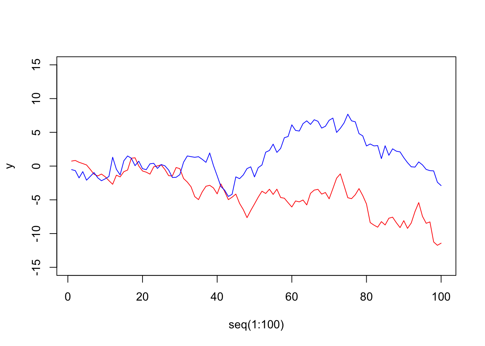
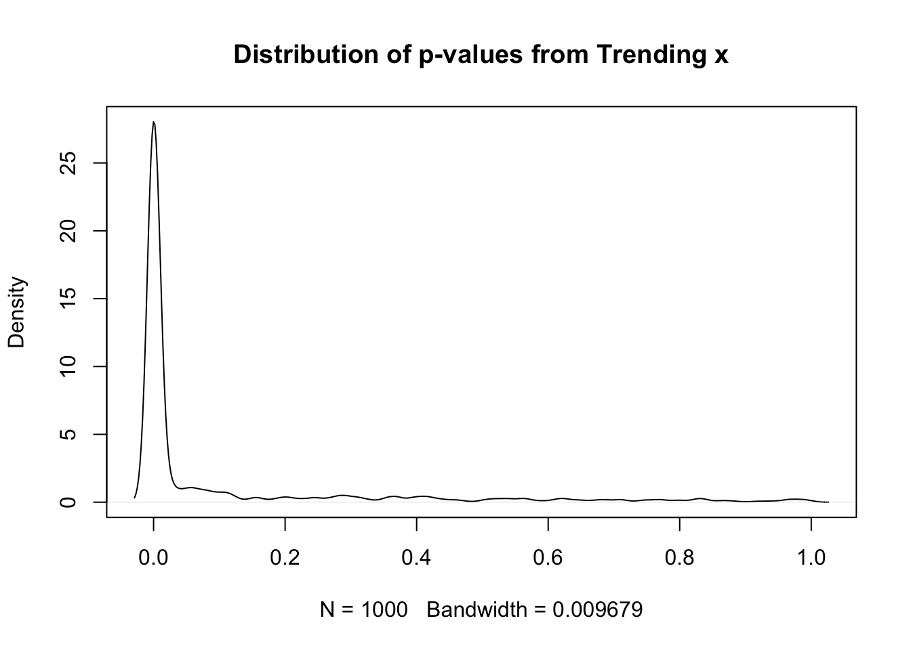

We want to simulate data under an ARIMA (p, d, q) model. arima.sim wants inputs as a list where the expected length of the ar and ma vectors that will hold the actual values of the ar and ma parameters. Here, I ask for a series that is I(1) with a first-order ar=0.1 and a first-order ma=-0.5. Let me start by generating it and plotting the time series.
library(fpp3)
Registered S3 method overwritten by 'tsibble':
method from
as_tibble.grouped_df dplyr
Let me do this with a relatively simple regression. Two variables:
\[ y = \alpha + \beta x + \epsilon \]
Both are generated randomly. Here’s a basic plot.
y <-cumsum(rnorm(100))x <-cumsum(rnorm(100))plot(x=seq(1:100), y=y, type="l", col="red", ylim=c(-15,15))lines(x=seq(1:100), y=x, col="blue")

Each time series contains 100 observations. Because both x and y are random, the slopes should be 0, 95% of the time with 95% confidence because there is no underlying relationship. In practice, let’s look at the distribution of p-values for the probability of no relationship.
I replicate the process of random x and random y 1000 times and show the p-values below. Because they are random, approximately 95% should be greater than 0.05.
Res1 <-SR(1000)plot(density(Res1), main="Distribution of p-values from Trending x")

In practice,
table(Res1 >0.05)
FALSE TRUE
738 262
The above table should show about 950 TRUE and 50 FALSE but because each is trended and they share variation from trend, the actual frequency of rejecting the claim of no relationship is far more common than 5%.
library(haven)
# To install TSA, it works in three steps.
# Link to package
# https://cran.r-project.org/web/packages/TSA/index.html
# The archive for the package is:
# https://cran.r-project.org/src/contrib/Archive/TSA/
# I grabbed the most recent one.
# Then I used the RStudio: Tools > Install Packages > From a local archive
# And installed it.
# It had dependency chains to fix.
# Those can be fixed with
# install.packages(c("leaps", "locfit", "mgcv"))
library(TSA)# Replicating the abrupt permanent in Aprilarimax(br7983$govpopld, seasonal =list(order =c(0, 0, 1), period =4), xreg=br7983$flandd)
# Replicating the gradual permanent May# Does not work; degrees of freedom?# arimax(br7983$govpopld, seasonal = list(order = c(0, 0, 1), period = 4), xtransf = br7983$flanddlag1, transfer = list(c(1,0)))# Falklands - gradual temporary (pulse decay) effect - May 1982# Does not work; degrees of freedom?# arimax(br7983$govpopld, seasonal = list(order = c(0, 0, 1), period = 4), xtransf = br7983$flanddlag1, transfer = list(c(1,1)))# These are fairly demanding [of the data] models.arimax(br7983$govpopld, seasonal =list(order =c(0, 0, 1), period =4), xtransf = br7983$flandd, transfer =list(c(1,0)))
# Simulation considers replicating cross-sections
x <- rnorm(100)
y <- rnorm(100)
summary(lm(y ~ x))
beta <- matrix(data=NA, nrow=100, ncol=4)
beta[1,] <- summary(lm(y ~ x))$coefficients[2,]
my.df <- data.frame(y=y, x=x)
for (i in 2:100) {
x2 <- rep(x, i)
y2 <- rep(y, i)
my.df2 <- data.frame(x=x2, y=y2)
beta[i,] <- summary(lm(y ~ x, data=my.df2))$coefficients[2,]
}
plot(x=seq(1,100), y=beta[,4], main="Replicating Cross-Sections", xlab="Number of Repetitions", ylab="p-value")
abline(h=0.05, lty=2)
# Simulation considers the spurious regressions problem
y.ts <- arima.sim(list(order = c(1,1,0), ar = 0.007), n = 200)
x.ts <- arima.sim(list(order = c(1,1,0), ar = 0.007), n = 200)
par(mfrow=c(2,1))
ts.plot(y.ts)
ts.plot(x.ts)
summary(lm(y.ts ~ x.ts))
for (i in 1:1000) {
y.ts.sim <- arima.sim(list(order = c(1,1,0), ar = 0.007), n = 200)
x.ts.sim <- arima.sim(list(order = c(1,1,0), ar = -0.001), n = 200)
beta.ts[i] <- summary(lm(y.ts.sim ~ x.ts.sim))$coefficients[2,4]
}
plot(density(beta.ts), main="Spurious Regressions")
table((beta.ts<0.05))
Yule, in 1926, shows the consequences of regressing nonstationary series on one another. To replicate his result via simulation, let’s perform one. First, to generate two nonstationary series. Then regress them on each other and keep the p-value for the slope attached to \(y_2\).